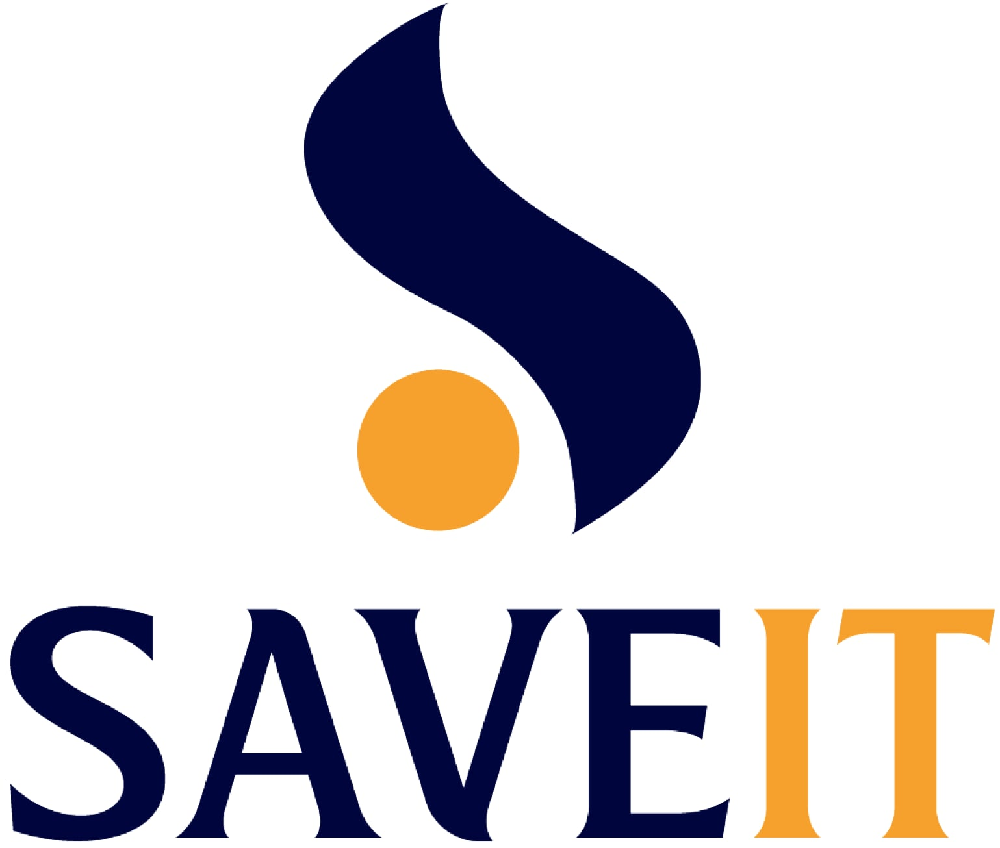
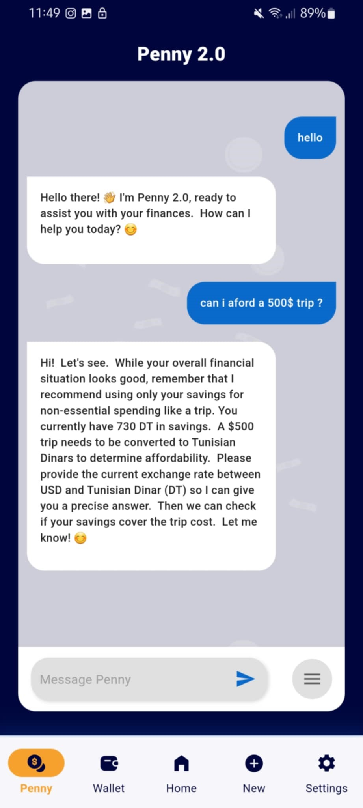
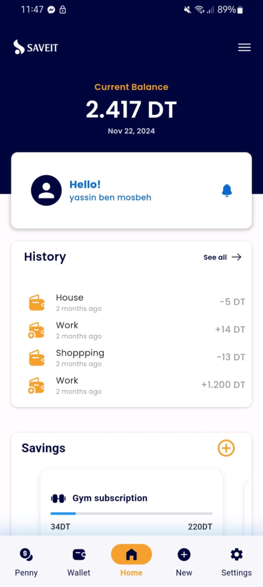
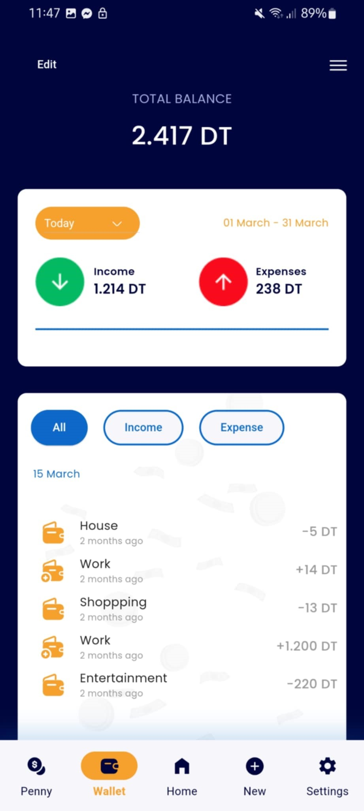

Conception d’une application mobile de gestion financière permettant le suivi des
dépenses, la définition de budgets mensuels et la réception d’alertes personnalisées.
5 e place au concours national Les Entrepreneurs de Demain



